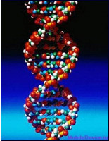

Попытки возрождения маврикийского дронта.

Группа американских ученых-биологов смогли выделить ДНК птицы из скорлупы единственного яйца.
Эксперименты с выделением палео-ДНК (то есть ДНК из ископаемых древних останков) проводятся давно. Но до сих
пор исследователи применяли технологию экстракции наследственного материала из костей ископаемых животных, в
частности — птиц.
В 1999 году британские ученые приступили к реализации программы воссоздания с использованием сохранившегося
генетического материала исчезнувшего вида животного. Причем в качестве первого объекта была выбрана знаменитая
птица дронт.
Любопытно, что в Москве, в Государственном Дарвиновском музее, имеется один из немногих скелетов дронта. Ученым известны считанные единицы скелетов (рис.) и костей дронта, а экземпляр, хранимый в Дарвиновском музее, — единственный в России.
Не смотря на все сложности выделения ДНК, американские биологои разработали технологию выделения наследственного материала
(ДНК) не из костей, а из яичной скорлупы.
Удалось получить не только ядерную ДНК, но и ДНК так называемых митохондрий — органелл, работающих как энергетические
станции клетки. Митохондриальная ДНК меньше ядерной, поэтому она лучше сохраняется в образцах и ее легче извлечь.
Однако она несет значительно меньше информации о живом существе. К тому же эта информация передается потомству только
по женской линии. По словам ученых, скорлупа — более удобный источник ДНК не только потому, что из нее легче извлечь
нуклеиновые кислоты. Дополнительным преимуществом является меньшая «привлекательность» скорлупы для бактерий, ДНК
которых загрязняет ДНК искомых видов и затрудняет работу с ней.
Фундаментальных ограничений для процесса клонирования, кажется, нет. Принципиальная схема ясна, поэтому остается только подождать. В случае с клонированной овцой Долли вероятность успеха составила 0,02%.